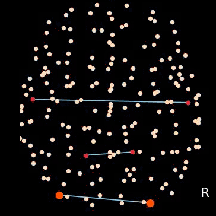
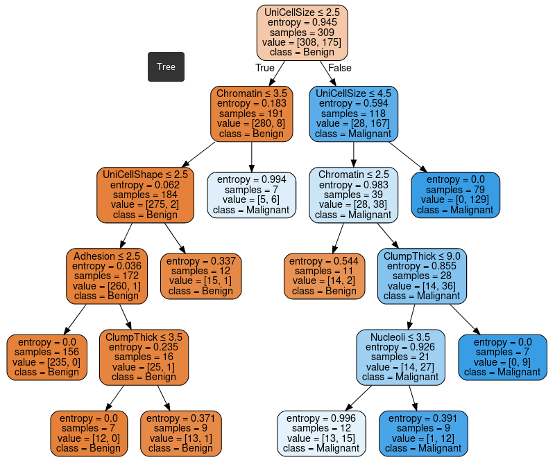
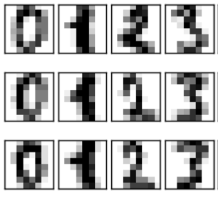
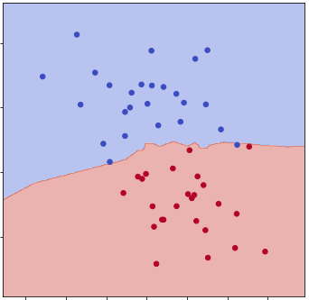
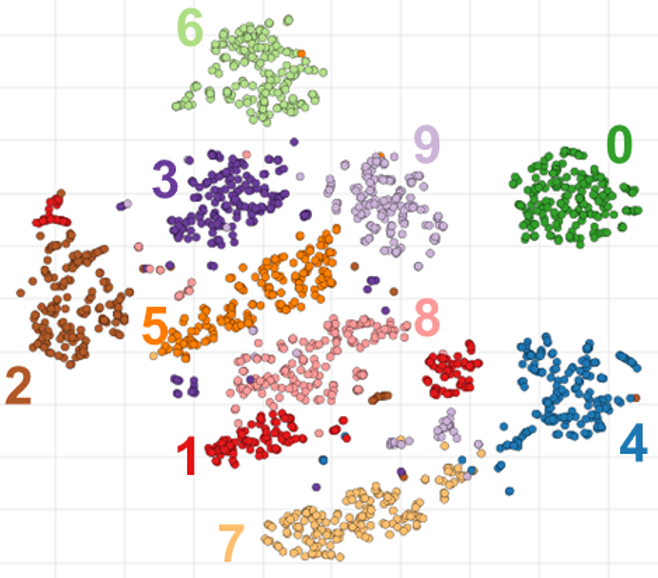

Satoru Hayasaka, Ph.D.
Number Cruncher by Training
Data Scientist
Linux Enthusiast
Number Cruncher by Training
Data Scientist
Linux Enthusiast

|

|

|
 |  |  |  |  |
|---|
After about 1 and 1/2 years, my homepage is being updated! I am starting out with the main page, then will update other pages as well.
I receive emails periodically about fMRI data analysis (power calculation in particular). I am no longer involved in brain imaging research, and thus unable to answer any questions related to brain imaging analysis. Your best bet would be to go through my lecture notes on fMRI data analysis and brain connectivity courses (available under the teaching page). I am no longer affiliated with the University of Texas at Austin, and am unable to answer any questions regarding graduate program admission.
I am starting out as a data scientist at KNIME Inc. I am part of the evangelism team, preparing educational materials and teaching people on how to do data science with KNIME.
Satoru Hayasaka, Ph.D.
Contact Information:
Email
sathayas [dot] github [at] gmail [dot] com
Twitter
@sathayas42
Phone
[...]
An old dog like me can learn a new trick! CSS and HTML powered by Satoru Hayasaka.